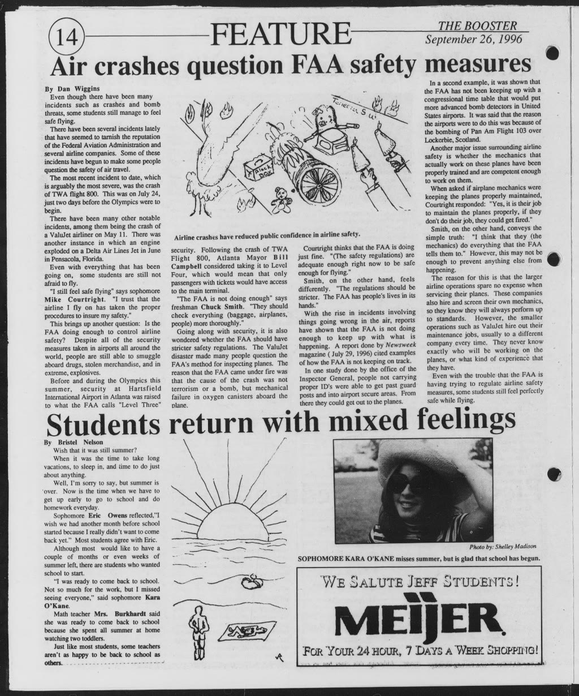

HN-824: Student aviation-safety report gets Flight 800's crash date wrong
HN-824 · September 26, 1996 · Transportation & Maritime > Transportation Accidents & Safety Investigations > Aircraft crashes

page image (archive tiles)Recorded finding
TWA Flight 800 crashed evening 17 July 1996; Indiana student tracker identifies an erroneous date.
Discovery narrative
Source: Jefferson Booster, p. 14 — original student newspaper; NTSB on TWA Flight 800; NTSB on ValuJet Flight 592.
Report: Student writer Dan Wiggins asked peers whether recent airline accidents had shaken their faith in flying, citing ValuJet Flight 592 and TWA Flight 800. His article dated Flight 800's crash July 24.
Assessment: The correct Flight 800 date is July 17, 1996; July 24 in the student report is erroneous. ValuJet 592 crashed May 11 after a fire associated with improperly carried chemical oxygen generators. Student perceptions of safety and official accident causes must be treated separately.
Curated audit flag
Class: Metadata/identity (M)
Recorded difference/concern: TWA Flight 800 crashed evening 17 July 1996; Indiana student tracker identifies an erroneous date.
Assessment: LA Times and Washington Post independently confirm 17 July. Student paper's exact erroneous numeral still untranscribed.
Source links: https://www.latimes.com/archives/la-xpm-1996-07-29-mn-29227-story.html https://www.washingtonpost.com/archive/politics/1996/07/25/twa-jets-black-boxes-recovered/f5d2f361-a726-466b-be59-8eae3758f1bc/
Original archive images (1)
Authentic images retrieved from Hoosier State Chronicles (Indiana State Library). Article crops are located using the archive's own OCR word coordinates and rendered at native crop resolution; article clips are assembled from the archive's own article-block images; page images marked "archive tiles" are stitched from the archive's own tiled page service at its 256-px tile cap; page images marked "issue PDF" are single pages rasterised from the archive's own issue PDF, with the page chosen by matching the headline against the PDF's text layer; page scans are reduced-size access renditions. No images were generated, mocked, or retouched.

Hoosier State Chronicles (Indiana State Library)
Open larger view · Archive viewer (full resolution)
Source acquisition
Status: Archive images acquired
Authentic archive-owned image renditions were retrieved for this record and are displayed above. The source-acquisition manifest preserves the original pre-acquisition feasibility assessment.
Original seed
URL (preserved verbatim): https://newspapers.library.in.gov/?a=d&d=JFBSTR19960926.1.14
Saved research report: Historical_Newspaper_Event_Research_803-827_2026-10-23.md
Evidence note: A newspaper report means a historical publication made a claim; it does not establish that claim as fact. Contemporary reporting is separated from later scholarly context and our own assessment.